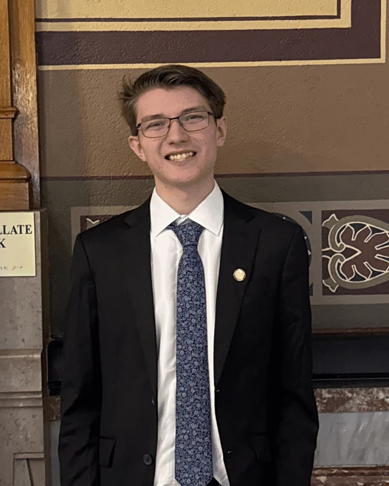

About me
I am a Game Development and Design student at Purdue University. I am on track to graduate in May 2027 and plan to pursue my master’s degree after graduation.
I work mostly in backend programming and design documentation. I have worked on two multiplayer games, implementing their full multiplayer systems and conducting large-scale testing. I have also created many game design documents, pitches, and other professional documents.
I would like to work as a technical game designer, but I am open to any programming or design-related position within an organization. I bring strong technical skills to my work, along with good communication and leadership skills.
Unreal Blueprints
I mostly work in backend programming, as that is generally what I am asked to do on projects, but I have experience with many kinds of Blueprint programming in Unreal. I have made multiple prototypes of existing systems from other games, including systems closer to frontend development. I have also worked closely with other programmers to help with their tasks, from gameplay scripting to UI.
Design documentation
I was previously a Professional Writing major, which helped me write professional-standard documentation as I moved further into game development. I enjoy putting other people’s ideas on paper, which I consider my biggest strength as a designer. I am also able to develop ideas of my own.
All but one of the projects shown here were made with other people. I try to make it clear which work is mine and which is not, so you can see where my skills contribute to a professional-looking final product.
Contact me
Email: schaafconnor0@gmail.com